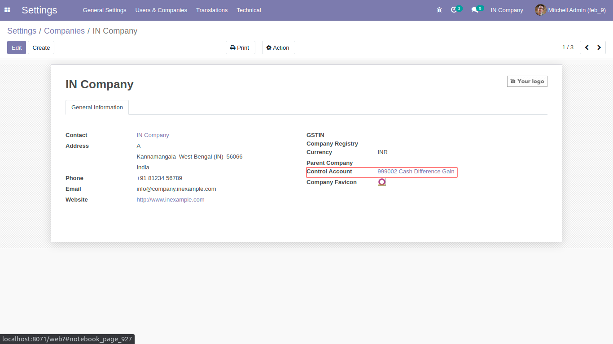
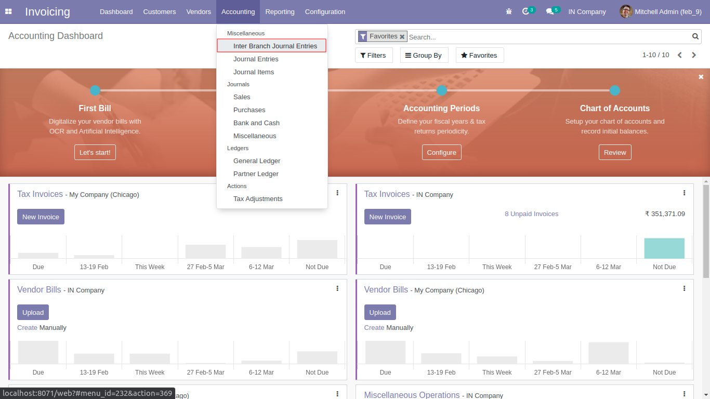
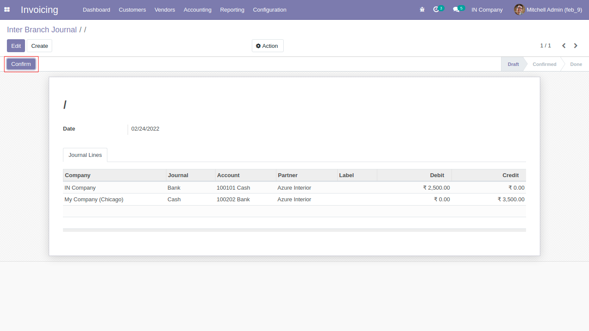
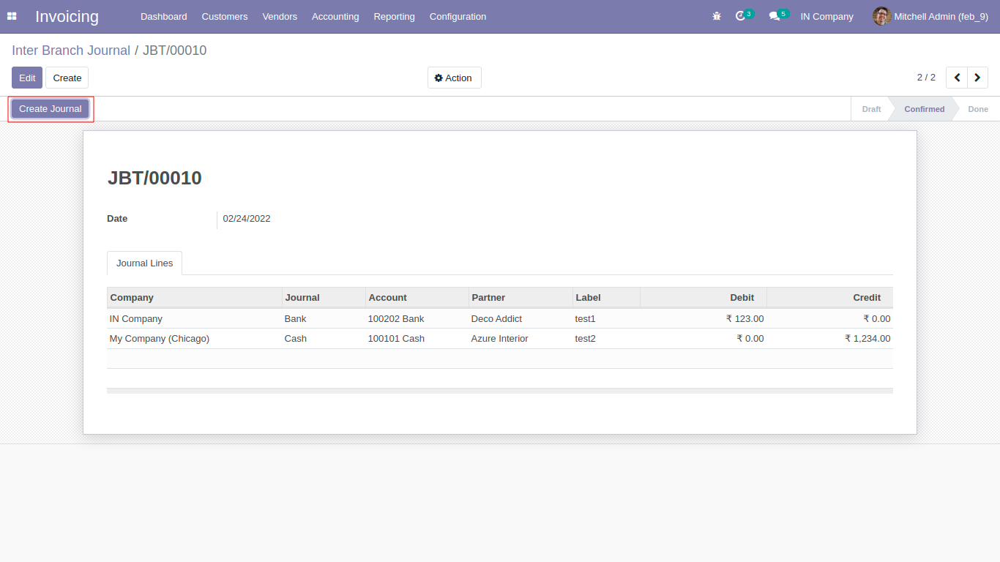

1.Set Control Account in Company form for balance Journal entries.

2.Click 'Inter Branch Journal Entries' menu located under Accounting>Accounting>Miscellaneous.

3. Create Inter Branch Journal and click 'Create Journal' button.


4. After clicking Create Journal button we can get journals based on company and the selected Account.(Selected 'Control Account' will balance journal lines) .